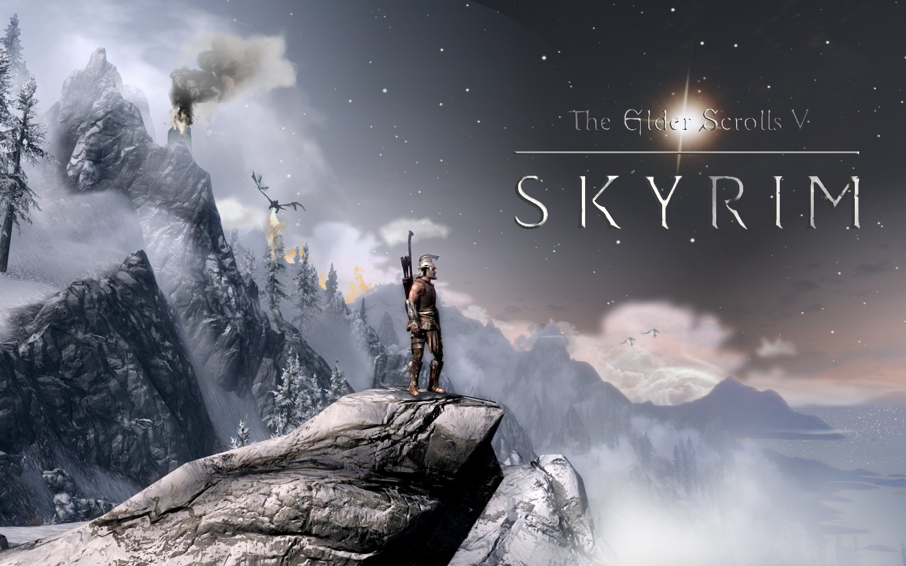
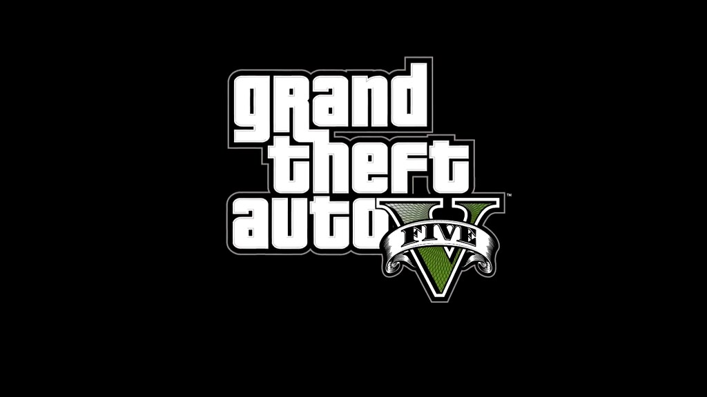
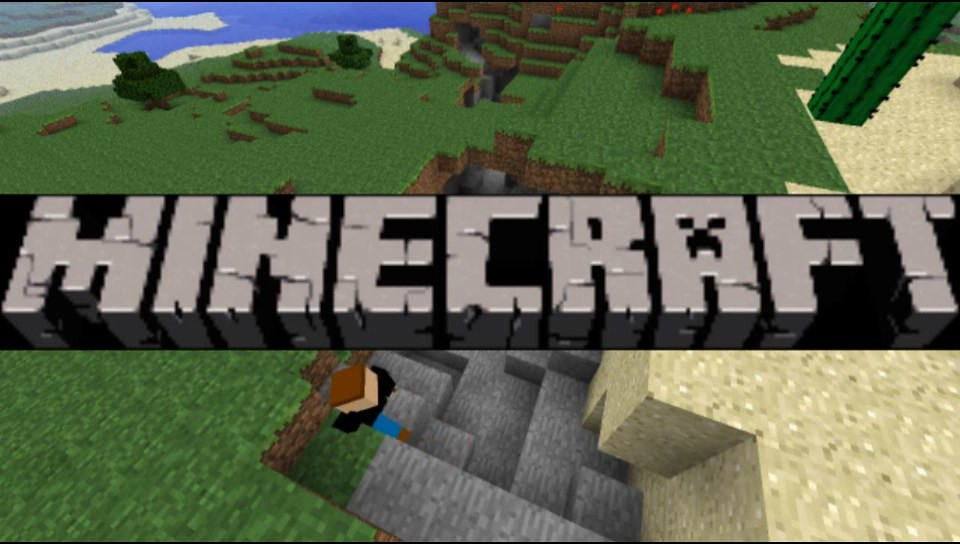

OverView
Welcome to my games webiste where you can see a select few games and see would you be interested in playing them.

Welcome to my games webiste where you can see a select few games and see would you be interested in playing them.
The Elder Scrolls V: Skyrim is an action role-playing video game developed by Bethesda Game Studios and published by Bethesda Softworks. It is the fifth main installment in The Elder Scrolls series, following The Elder Scrolls IV: Oblivion (2006), and was released worldwide for Microsoft Windows, PlayStation 3, and Xbox 360 on November 11, 2011. For more Information check out the Skyrim page or check out this page- ...Check out more
Grand Theft Auto V is a 2013 action-adventure game developed by Rockstar North and published by Rockstar Games. It is the seventh main entry in the Grand Theft Auto series, following 2008's Grand Theft Auto IV, and the fifteenth instalment overall. Set within the fictional state of San Andreas, based on Southern California, the single-player story follows three protagonists—retired bank robber Michael De Santa (Ned Luke), street gangster Franklin Clinton (Shawn Fonteno), and drug dealer and gunrunner Trevor Philips (Steven Ogg), and their attempts to commit heists while under pressure from a corrupt government agency and powerful criminals. Players freely roam San Andreas's open world countryside and fictional city of Los Santos, based on Los Angeles. For more information about GTAV check out this website. ...Check out more here!
Minecraft is a 2011 sandbox game developed by Mojang Studios and originally released in 2009. The game was created by Markus "Notch" Persson in the Java programming language. Following several early private testing versions, it was first made public in May 2009 before being fully released on November 18, 2011, with Notch stepping down and Jens "Jeb" Bergensten taking over development. Minecraft has become the best-selling video game in history, with over 300 million copies sold and nearly 140 million monthly active players as of 2023. It has been ported to several platforms. For morw information about Minecraft cehck out this wevbiste .....Check out more here
| Game | Company | Year of Realease | Percentage of Players |
|---|---|---|---|
| Skyrim Elders Scrolls V | Bethesda | 2011 | 33% |
| GTAV | RockstarGames | 2013 | 71% |
| Minecraft | Microsoft | 2009 | 66% |